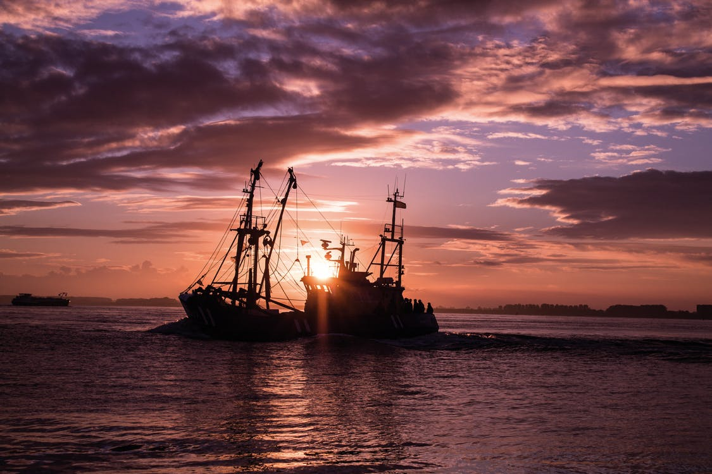

How I ended up washing dishes in Alaska
by
There was no good reason to be on campus that late spring day. I ran into the Peruvian and got it from him there might be good money working as a fisherman in Alaska. He had this on authority from the Estonian, who, in retrospect, was a bit flakey. Besides, it was 1995—ten years before Deadliest Catch—so Stone was really our only source for information.
We agreed to meet for coffee a few days later and Peru told me what he knew about the job. It sounded plausible, and with some encouragement from Stone, I bought a one-way ticket to King Salmon, AK.
Departure day came quickly and Stone had visa problems, so Peru and I rode the friendly skies through SEA-TAC to Anchorage. From there we boarded a much smaller aircraft, front-end and mid-section stuffed to the gills with cargo.
The baggage claim was four pallets hemmed in by a low plywood wall. We hoisted our bags in the light drizzle and accepted a ride from a cannery worker.
She filled us in on how things worked. Everything Stone had told us was wrong. Lying to a captain, telling him you had experience as a fisherman would, at best, be transparent and never get you a job. At worst, the fiction would be discovered out on the water, where the trust of your shipmates was necessary for survival. She dropped us at Tent City, a rough campground on the eastern edge of Naknek.
Now Naknek and King Salmon are connected by a highway. It runs about 13 miles long, and if you steal a car in Naknek, you can drive to King Salmon, make a u-turn and come back again. There is no way out other than by boat or by plane. This isolation has a curious effect on people, and sudden, random violence was not uncommon. More on this later.
It's been long enough that I no longer remember how many tents were pitched out there on the tundra. 30? 70? However many it was, the group hanging out at the shelter round the picnic tables were a rough lot. The conversation had maybe three themes:
- Been fishing for five years, got here six weeks ago, and still haven't found a job
- Blew ten grand on crack cocaine and hookers
- I'd rather starve than do anything but fishing
Bear in mind that I had maybe $30 to my name, and in my naïveté, I imagined the fishing job would come to me almost instantaneously, meeting my basic needs. The reality sinking in now was that I was rapidly on track to a dire poverty with no real way out.
I'd rather starve than do anything but fishing
As I heard the variations on that particular theme, I began to formulate a plan. How was a greenhorn like me supposed to get a fishing job when people with five years of experience couldn't get hired?
My job description: anything but fishing.
To be continued...